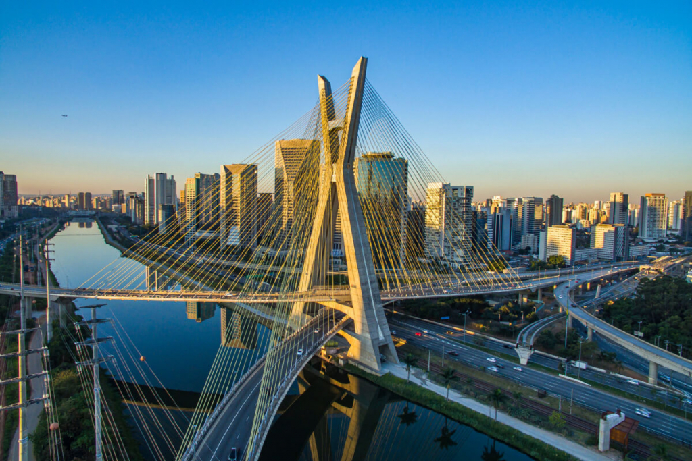
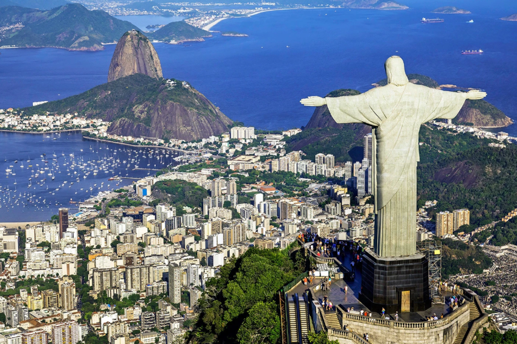
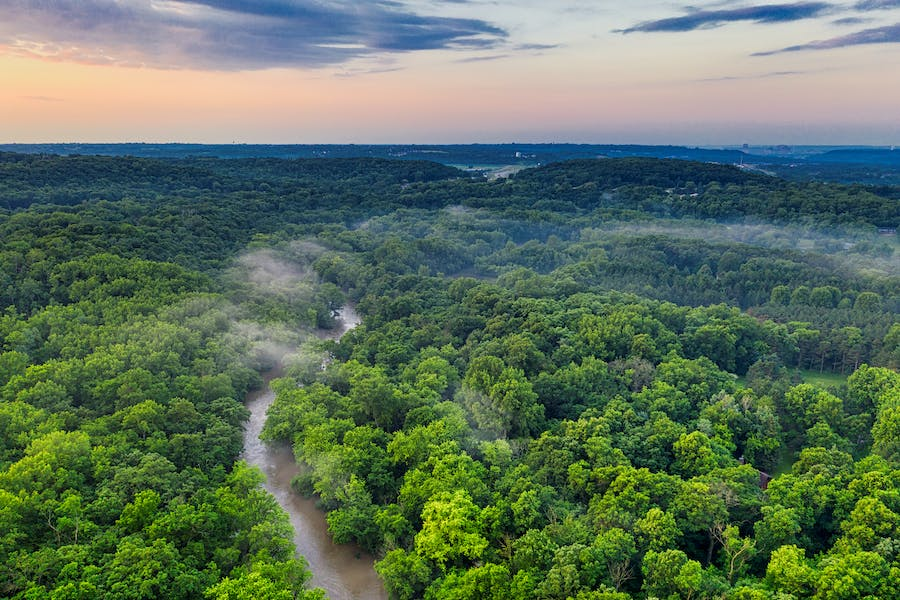
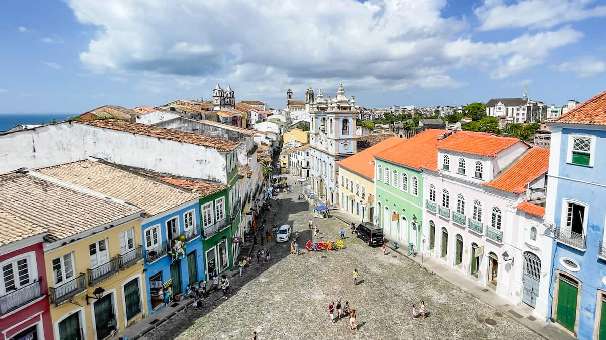
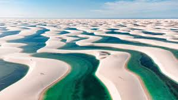

Popular Destinations

São Paulo
Brazil’s largest city, known for its skyscrapers, diverse culture, and world-class gastronomy.

Rio de Janeiro
Home to Christ the Redeemer, Sugarloaf Mountain, and Copacabana Beach. A city of samba, carnival, and breathtaking scenery.

Amazon Rainforest
The world's largest tropical rainforest, full of biodiversity, river adventures, and ecotourism experiences.

Salvador
Capital of Bahia, known for its Afro-Brazilian culture, colonial architecture, and coastal charm.

Iguaçu Falls
A massive series of waterfalls on the Brazil-Argentina border, surrounded by lush forest and wildlife.

Lençóis Maranhenses
Vast white sand dunes dotted with blue lagoons, one of Brazil’s most unique landscapes.